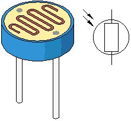
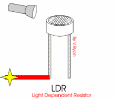
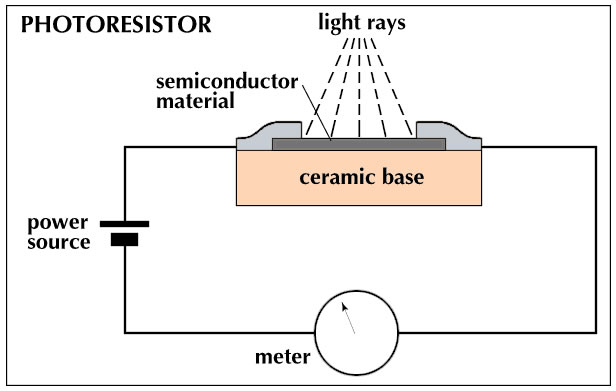
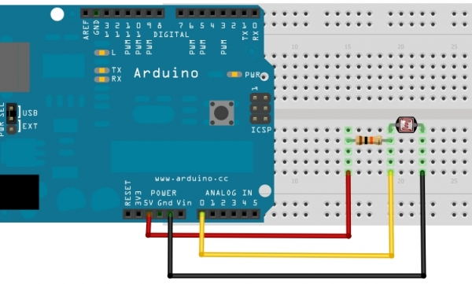

Archived note, written in 2016, while I was at MIT FabLab Kerala. Tools and versions have moved on since.
LDR
Light Dependant Resistor
A Light Dependent Resistor (LDR) or a photo resistor is a device whose resistivity is a function of the incident electromagnetic radiation.

The light dependent resistor, LDR, is known by many names including the photoresistor, photo resistor, photoconductor, photoconductive cell, or simply the photocell.
Working
LDR offers variation in resistance as a function of light intensity.When the light intensity increases the semiconductor layer gets excited leading to the generation of charge carries hence better conduction ie lower resistance.

Image source : http://www.technologystudent.com/elec1/ldr1.htm
An N type semiconductor is layered on top of a ceramic base.Metal contacts are then used to pull connections from the high doped end points, which offer low contact resistance. The aread between the contacts are mostly made in Zig Zag fashion which helps with maximising the exposed area and increase gain by reducing spurious resistance.

Image source : https://bhavanajagat.files.wordpress.com/2013/09/wholedesigner-photochemistry-photo-resistor.jpg
Interfacing with Arduino
LDR , being an analog sensor, can easily be interfaced with Arduino using Analog Pins A0-A5 as shown in image.

Image source : http://cdn.instructables.com/FYN/JJOX/IBAMNQHP/FYNJJOXIBAMNQHP.MEDIUM.jpg
Arduino Code
const int ldr = 0; //A0 assigned as LDR pin.
int value = 0; //Store values from LDR.
void setup()
{
Serial.begin(9600); //Fix serial baud rate at 9600bps
}
void loop()
{
value = analogRead(ldr); //Read the analog values from LDR.
Serial.println(value); //Print to serial monitor.
delay(250); //Delay of 250 milliseconds (1/4th of a second).
}